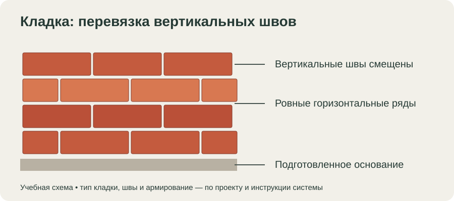

Газобетон или пенобетон: что выбрать
Сравнение двух видов ячеистого бетона по прочности, геометрии и стабильности качества.
Газобетон и пенобетон относятся к ячеистым бетонам, но производятся по-разному. Поры газобетона образуются химической реакцией, а пенобетона — пенообразователем, который вводят в раствор.
Газобетон почти всегда автоклавный и выпускается на крупных заводах, поэтому у него стабильная плотность и точная геометрия (отклонения до 1–2 мм). Пенобетон часто делают неавтоклавным, на небольших производствах: его прочность ниже, усадка выше, а размеры блоков менее точные.
Пенобетон с закрытыми порами меньше впитывает воду, но при одинаковой плотности прочнее газобетон. Для несущих стен надёжнее газобетон, а пенобетон оправдан для перегородок и утепления.
Если нужно заменить газобетон на пенобетон, выбирайте блоки на 100 единиц плотности выше (D600 вместо D500), чтобы сохранить прочность, и учитывайте, что стена станет немного холоднее.
Главное за минуту
- Газобетон и пенобетон относятся к ячеистым бетонам, но производятся по-разному.
- Газобетон почти всегда автоклавный и выпускается на крупных заводах, поэтому у него стабильная плотность и точная геометрия (отклонения до 1–2 мм).
- Пенобетон с закрытыми порами меньше впитывает воду, но при одинаковой плотности прочнее газобетон.

Проверить перед работой
- Определите назначение стены: несущая, перегородка или облицовка.
- Сверьте геометрию, прочность и примыкания с проектом или альбомом системы.
- Проверьте первый ряд, перевязку, швы и качество каждого этапа до отделки.
Частые ошибки
- Выбирать материал только по цене за штуку, не считая стену целиком.
- Менять крепёж, профили и элементы системы без проверки совместимости.
Источники и изображения
Учебная схема кладки из блоков · Редакция ctroimir · Источник изображения · Авторская учебная схема
 Вопрос-ответ
Вопрос-ответ